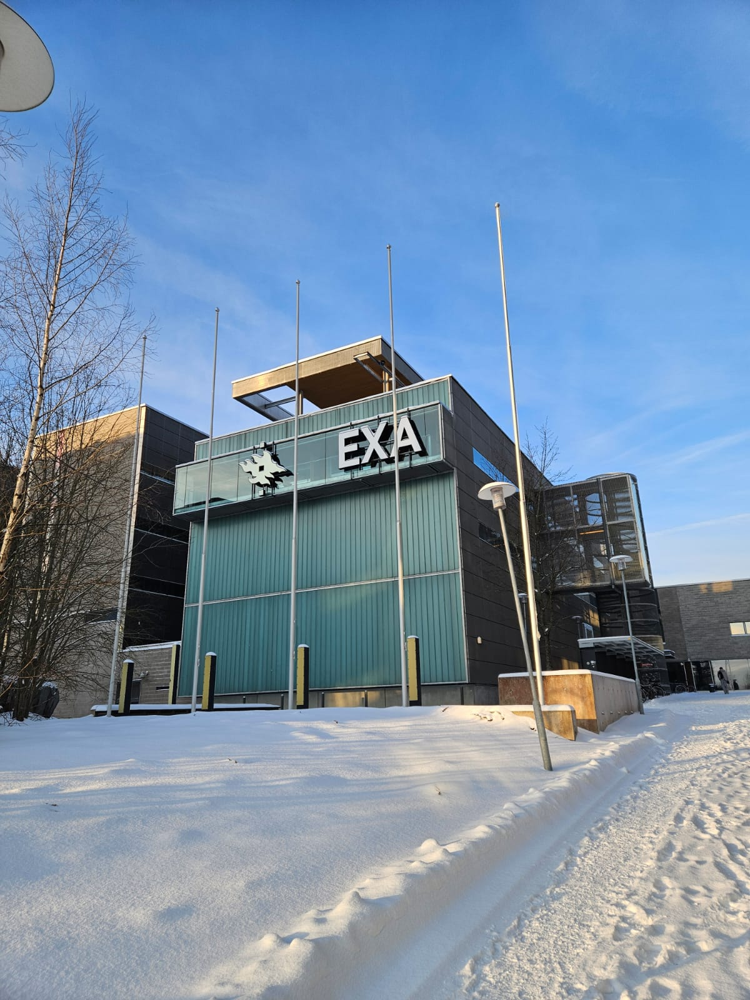

Started Doctoral Studies at the University of Helsinki, Finland

Today, marks the beginning of an exciting new chapter in my academic journey as I officially start my doctoral studies at the University of Helsinki, Finland. I am delighted to join the Data Analytics and Cyber Security research group as a Doctoral Researcher, where I will have the opportunity to explore interesting research problems, collaborate with experienced researchers, and further develop my knowledge in computer science and data analytics.
My Research Focus
My doctoral research will focus on explainable data mining algorithm development, with an emphasis on designing algorithms that can identify meaningful patterns and structures in complex datasets while ensuring interpretability. I am particularly interested in developing efficient and explainable algorithms that not only produce useful results but also help us understand how those results are obtained. Through my research, I hope to contribute to the development of more transparent, interpretable, and reliable data mining methods.
Beginning My Doctoral Journey
Starting my PhD is both exciting and a little challenging, as I take another important step in my academic journey. Moving from master's-level studies to doctoral research means exploring new research questions, developing original ideas, and learning to approach problems more independently. I am looking forward to deepening my knowledge through reading scientific literature, developing and implementing algorithms, conducting experiments, and participating in research discussions. I know there will be challenges along the way, but I am excited to learn, explore, and grow throughout this journey.
Learning and Collaboration
One of the things I am most looking forward to is working with my supervisors and colleagues in the Data Analytics and Cyber Security research group. Being part of an active research environment will give me the opportunity to exchange ideas, learn from different perspectives, and receive valuable feedback on my research. I hope to make the most of these opportunities by actively participating in research discussions, collaborating with other researchers, and continuously improving my technical and analytical skills.
Looking Ahead
As I begin this journey, I am looking forward to exploring new research directions, developing innovative algorithms, contributing to scientific publications, and gradually becoming a more independent researcher. I understand that completing a PhD requires patience, dedication, curiosity, and continuous learning. There will certainly be challenges, unexpected results, and moments of uncertainty, but I believe each experience will be an opportunity to learn something new. Today is just the beginning of what I hope will be a meaningful and rewarding research journey. I am excited about the opportunities ahead and look forward to sharing my research experiences, progress, and lessons learned along the way.